Cooper-Hewitt, National Design Museum
2 East 91st Street
New York City
Cooper Hewitt es el único museo en Estados Unidos dedicado exclusivamente al diseño histórico y contemporáneo, y es el custodio de una de las colecciones de diseño más diversas y completas que existen: más de 215,000 objetos de diseño que abarcan 30 siglos.
Erick Adigard | M.A.D.
Thursday, September 12
6:00 pm
Graphic designer Erik Adigard founded McShane
Adigard Design (M.A.D.) in 1989. The firm has since designed Web sites, multimedia installations, and print publications for global clients, including Wired magazine. Ir al inicio
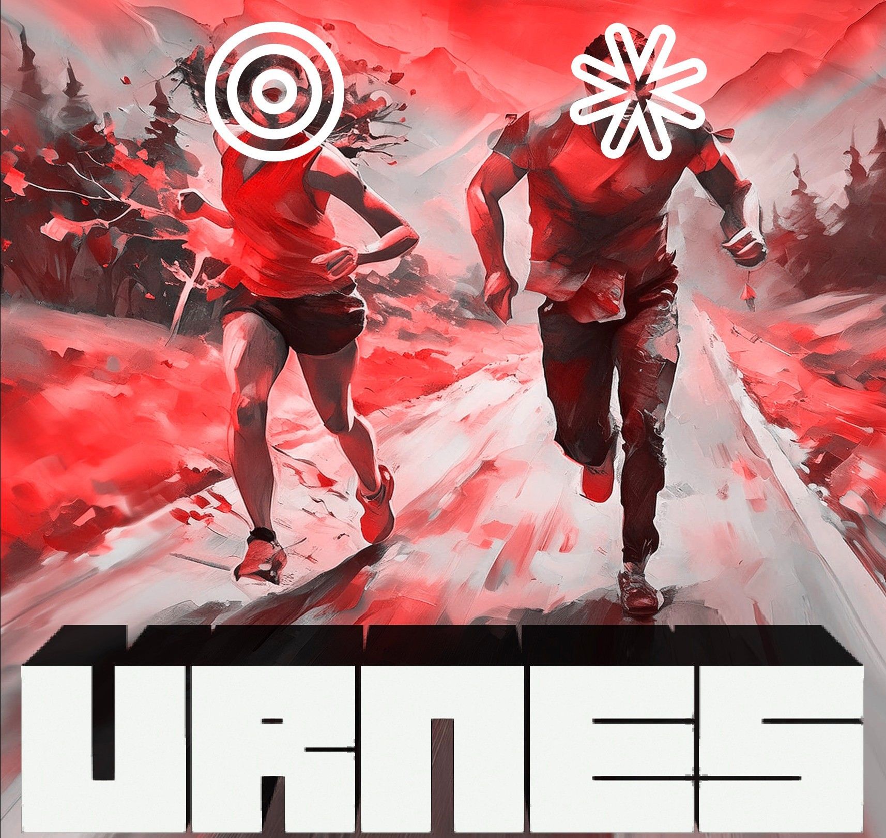
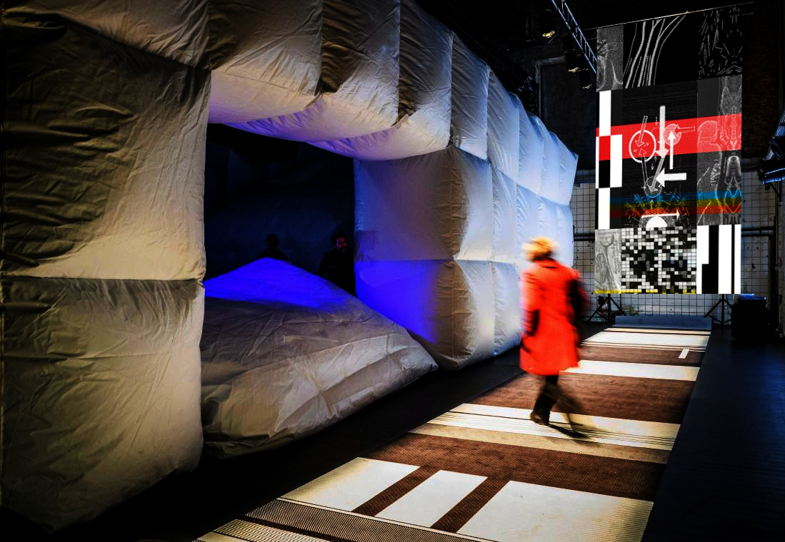
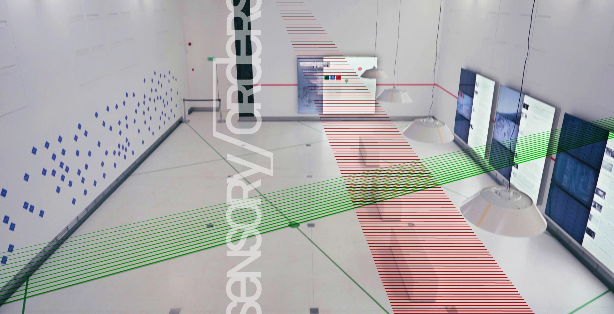
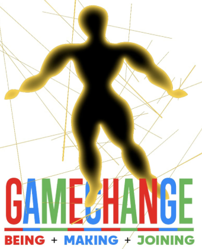
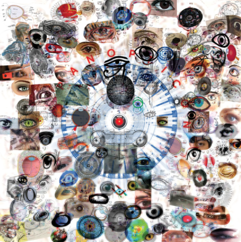
Julie Bargmann | D.I.R.T. Studio
Tuesday, October 9
7:30 pm
Julie Bargmann founded D.I.R.T Studio, a landscape consultancy, in 1992. Recent projects include the landscaping of the Massachusetts Museum of Contemporary Art in North Adams, and Riverside Park South and the Hudson River Park in New York City. Ir al inicio
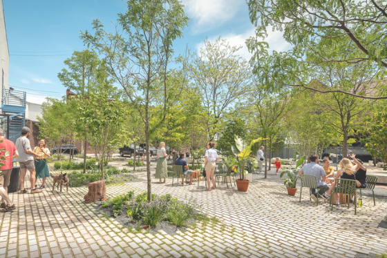
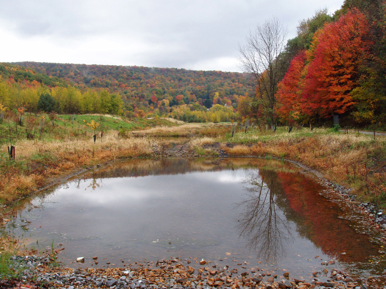
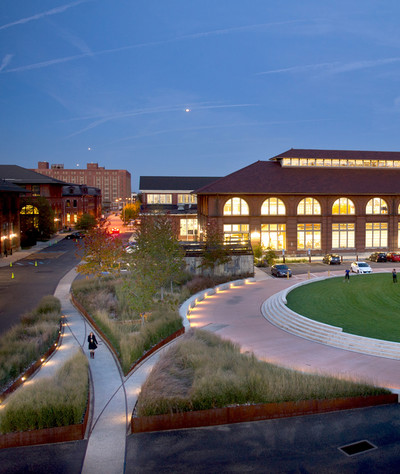
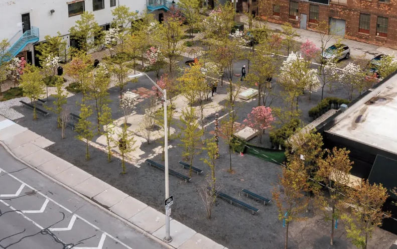
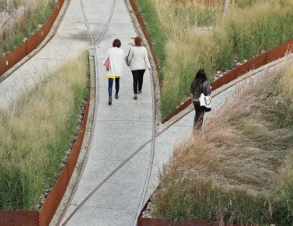
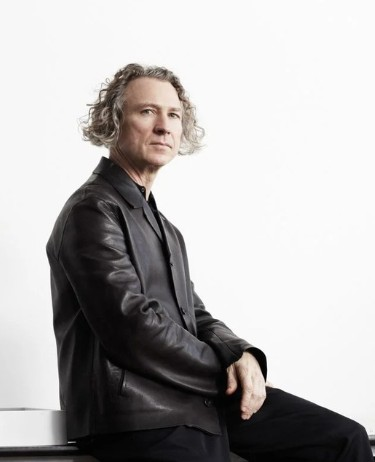
Michael Gabellini | Gabellini Associates
Wednesday, November 2
6:00 pm
Michael Gabellini, a graduate of the Rhode Island School of Design, worked for Kohn Pedersen Fox Associates before founding his own practice in 1991. Recent projects include exhibitions for the Guggenheim Museum, the Marian Goodman Gallery, and the Council of Fashion Designers of America. Ir al inicio
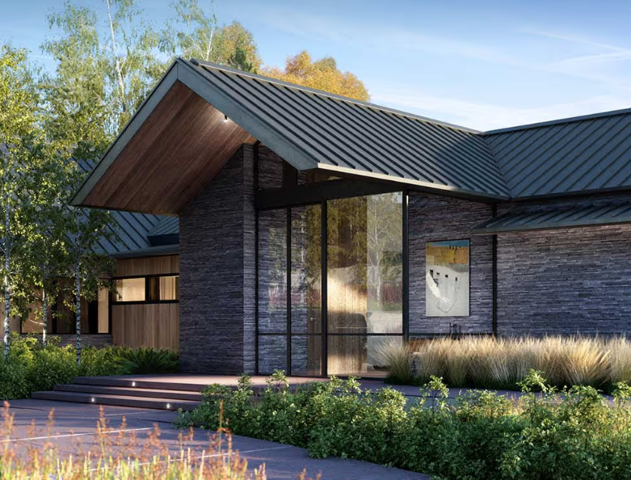
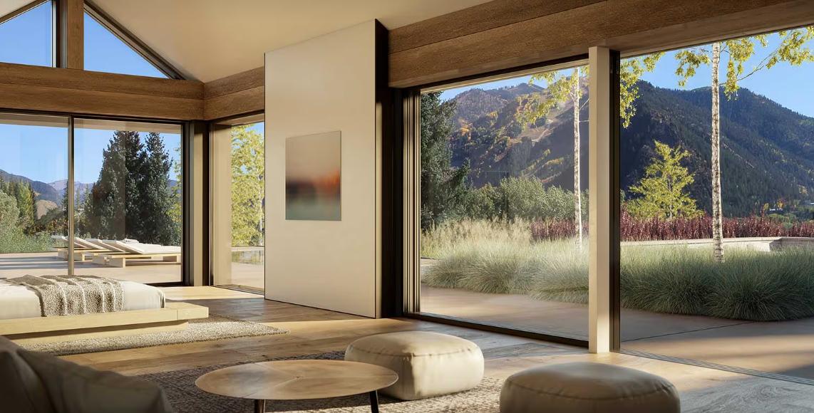
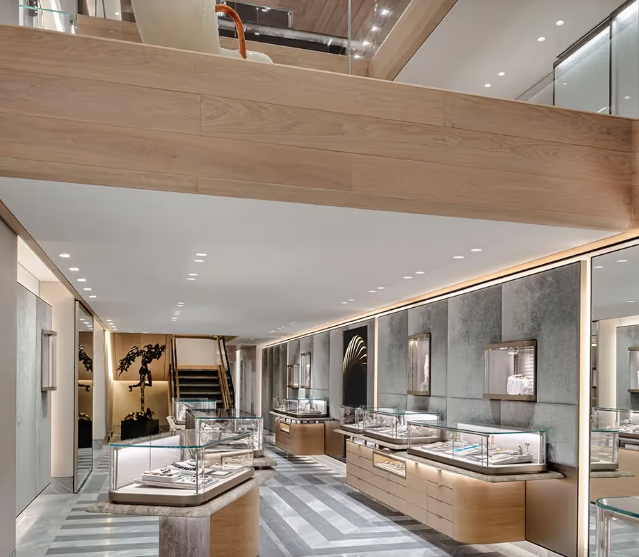
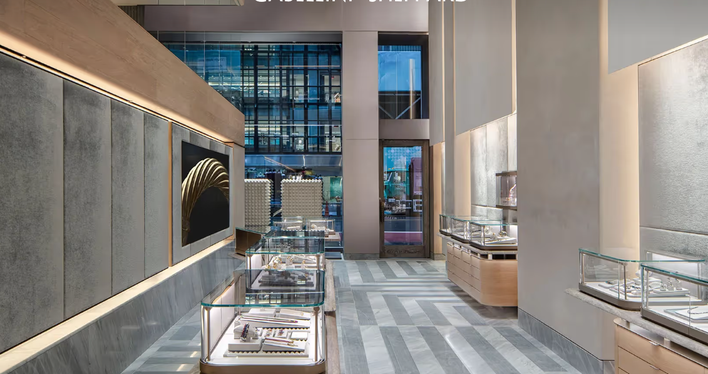
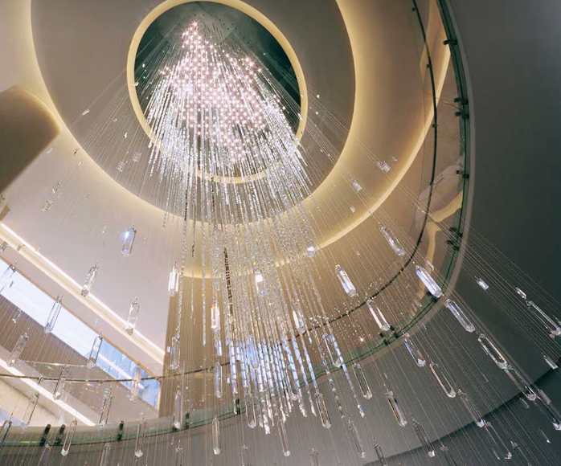
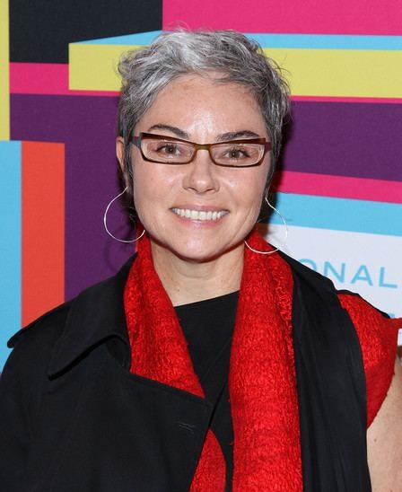
Rebeca Méndez | Méndez Communications
Thursday, December 4
6:30 pm
Rebeca Méndez, born and raised in Mexico City and trained at the Art Center College of Design in Pasadena, has designed publications for the Getty Center, the Los Angeles County Museum of Art, and the Whitney Museum of American Art. Ir al inicio
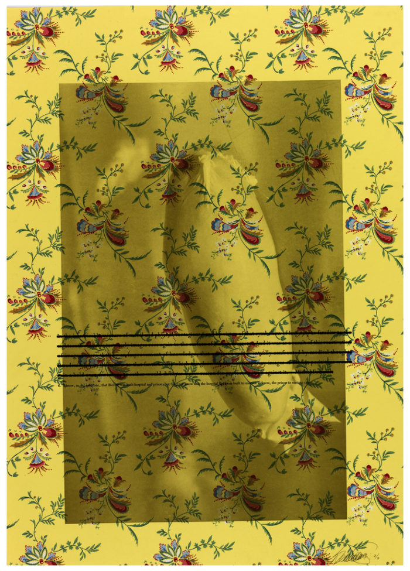
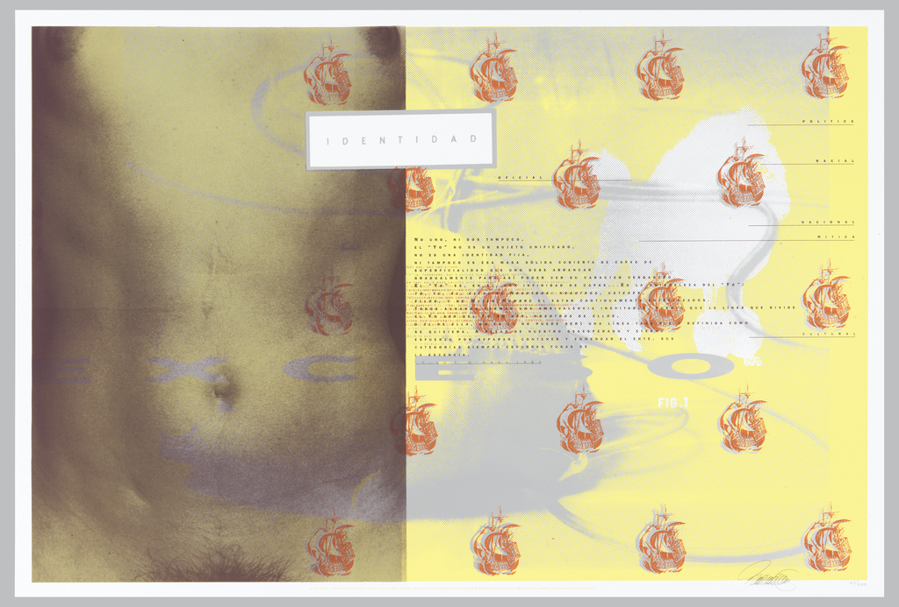
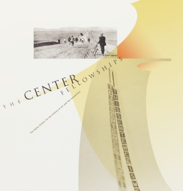
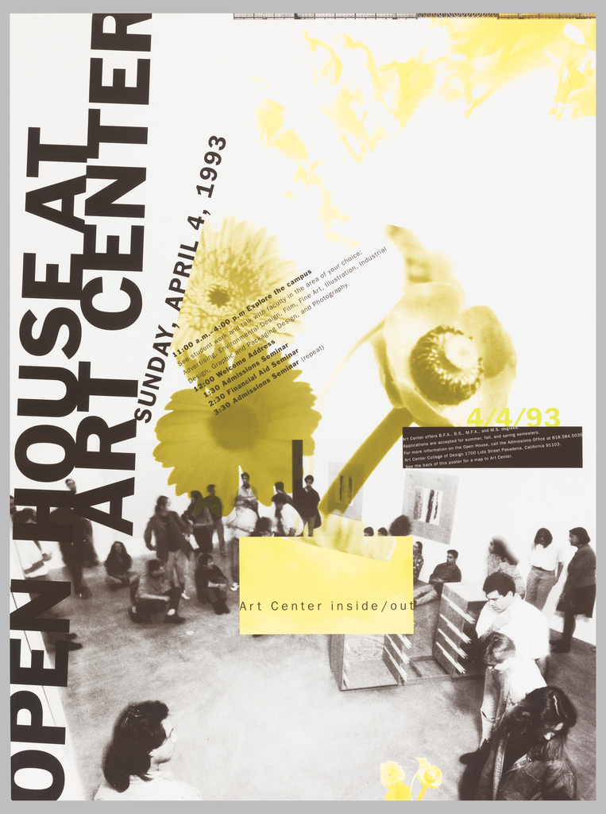
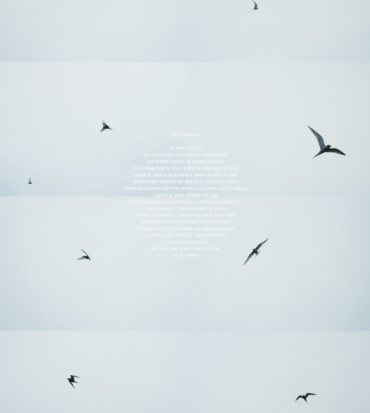
Información General
Autobús
Hacia Uptown: M1, M2, M3, M4 hasta la 5ª Ave. y las calles 90 o 92.
Hacia Downtown: M1, M2, M3, M4 hasta Madison Ave. y la calle 91.
Crosstown: M96 hasta Madison Ave. y la calle 94. Recomendamos el uso del metro y el autobús.
Accesibilidad
Consulte Cómo Llegar para obtener información sobre estacionamiento accesible y transporte público.Para una entrada accesible al museo, por favor comuníquese con el personal en la entrada de 2 East 91st Street. ir al inicio
Compra de boletos
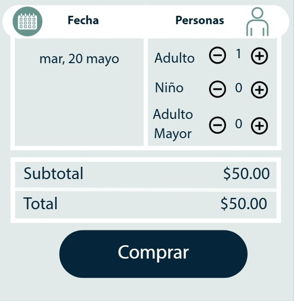
Comentarios
¡Increible!
¡Muy Recomendable!
Me encanto